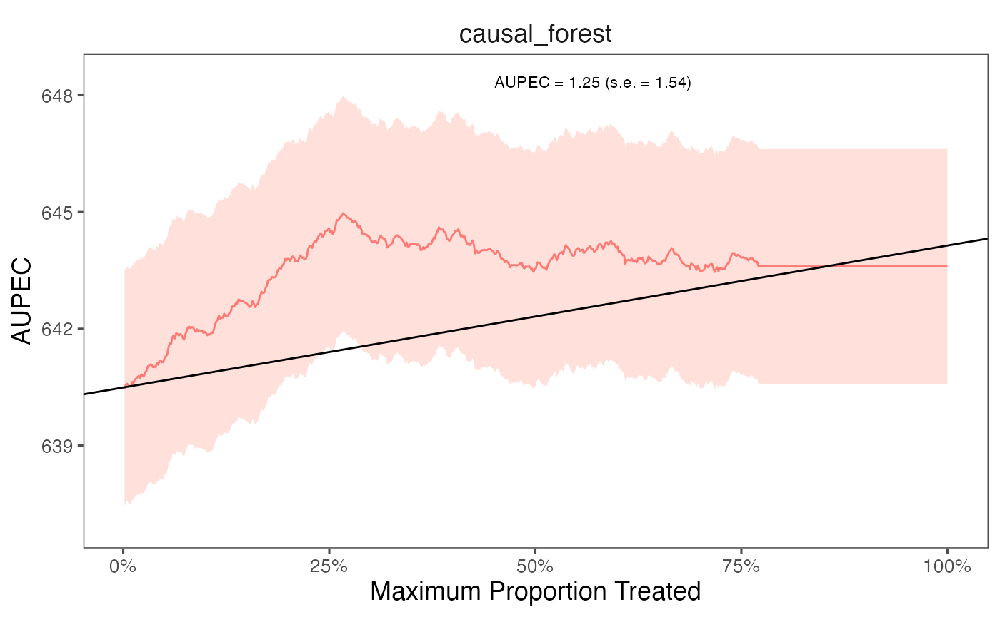

The package allows estimate ITR with k-folds cross-validation.
Instead of specifying the split_ratio argument, we choose
the number of folds (n_folds). The following code presents
an example of estimating ITR with 3 folds cross-validation. In practice,
we recommend using 10 folds to get a more stable model performance.
library(evalITR)
# estimate ITR
set.seed(2021)
fit_cv <- estimate_itr(
treatment = treatment,
form = user_formula,
data = star_data,
algorithms = c("causal_forest"),
budget = 0.2,
n_folds = 3)
#> Evaluate ITR with cross-validation ...
# evaluate ITR
est_cv <- evaluate_itr(fit_cv)
#> Cannot compute PAPDp
# summarize estimates
summary(est_cv)
#> ── PAPE ────────────────────────────────────────────────────────────────────────
#> estimate std.deviation algorithm statistic p.value
#> 1 0.49 0.91 causal_forest 0.54 0.59
#>
#> ── PAPEp ───────────────────────────────────────────────────────────────────────
#> estimate std.deviation algorithm statistic p.value
#> 1 2.6 0.76 causal_forest 3.4 6e-04
#>
#> ── PAPDp ───────────────────────────────────────────────────────────────────────
#> Cannot compute PAPDp
#>
#> ── AUPEC ───────────────────────────────────────────────────────────────────────
#> estimate std.deviation algorithm statistic p.value
#> 1 1.2 1.5 causal_forest 0.81 0.42
#>
#> ── GATE ────────────────────────────────────────────────────────────────────────
#> estimate std.deviation algorithm group statistic p.value upper lower
#> 1 -85 59 causal_forest 1 -1.45 0.15 30 -201
#> 2 40 59 causal_forest 2 0.68 0.50 157 -76
#> 3 29 59 causal_forest 3 0.50 0.62 145 -86
#> 4 13 59 causal_forest 4 0.22 0.82 129 -103
#> 5 21 102 causal_forest 5 0.20 0.84 220 -179
# plot the AUPEC
plot(est_cv)